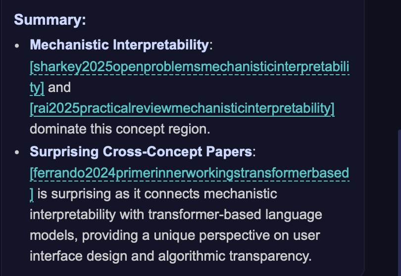
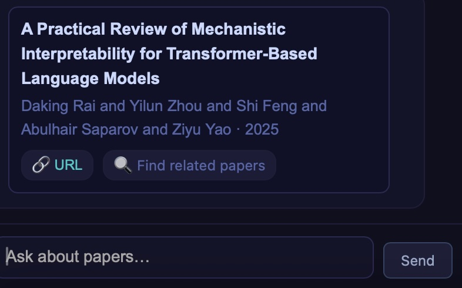

VIBE
Research Assistant
A personal bibliography mapped into space. POI nodes on the periphery pull papers toward them by semantic similarity — drag one and the field reorganizes around the new concept. An LLM reads the resulting map and tells you what it sees.
Concept gravity
~1,083 papers from a personal BibTeX library are embedded as points in a 2D field. POIs (Points of Interest) — concept terms placed at the periphery — act as attractors: each paper is positioned by how strongly it is pulled toward each surrounding concept. The result is a map of a research field, not a list.
A query decomposes into concept terms that become the new POI labels. The field redraws around them. The layout is the search result.
Drag to reframe the question
Moving a POI node repositions every paper relative to the new conceptual anchor — not by re-running a query, but by changing what counts as central. Work that was peripheral under one framing becomes dominant under another. The gesture makes explicit that relevance is a choice about what you care about, not a fixed property of a document.
With two POIs active the canvas becomes a tension field. Papers in the middle sit at the intersection of both concepts — that is typically where the cross-disciplinary work is. Papers at the edges belong unambiguously to one pole.

Where the field has converged
Cluster density is information. A dense region means the field has converged — many papers making closely related arguments. A sparse region means either an underexplored question or one that doesn't yet have enough mass to cohere. The center of the canvas, where no single POI dominates, tends to surface the genuinely cross-cutting work that keyword search consistently buries.
Because the layout updates with each query, the density pattern changes with the framing. The same corpus looks different depending on which concepts you choose to anchor it.
Reading the map together
The LLM receives the same spatial configuration the user sees — which papers landed near which POIs, which sit at the intersections, which are outliers. Its commentary is grounded in that specific layout, not retrieved from general knowledge. It is interpreting the map, not answering a search query.
Clicking a dot shifts the mode: the LLM reads that paper's abstract in context of its position on the canvas — why it sits where it does, what it shares with its neighbors, where it diverges.

A personal library as the substrate
The corpus is ~1,083 papers from a personal BibTeX library spanning HCI, information retrieval, visualization, machine learning, and NLP. Because it is one researcher's reading history rather than a general-purpose database, the density patterns it produces reflect actual research attention — what got read, what got cited, where the gaps are.
Author mode is a distinct entry point: querying by name produces a POI canvas derived from that researcher's own titles, laying out their body of work as a field shaped by their own concepts.
